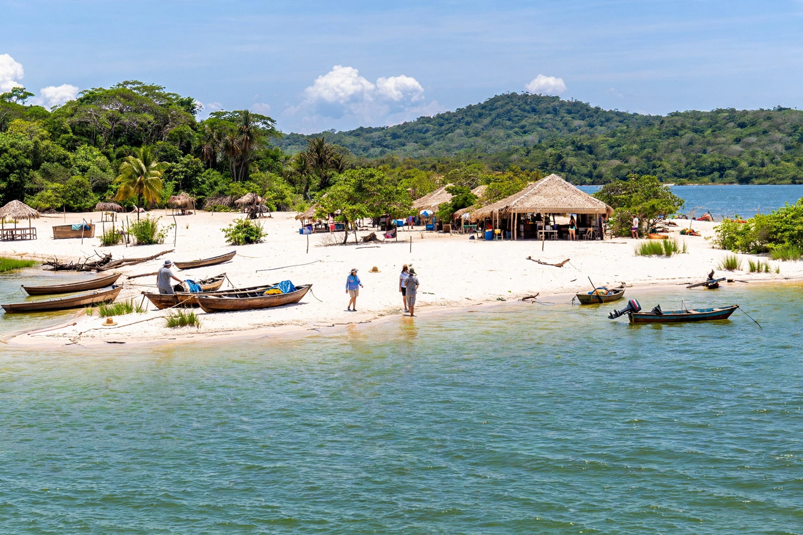

Alter do Chão is a village (vila) and administrative district of the municipality of Santarém, in the Brazilian state of Pará, located about 30 kilometres west of the city on the right bank of the Tapajós River. It is one of the most famous freshwater beach destinations in Brazil — often called the "Caribbean of the Amazon" — known for the Ilha do Amor (Island of Love), a white-sand island beach that emerges in front of the village during the dry season, when the river level falls.
| Alter do Chão | |
|---|---|
 | |
| Country | Brazil |
| State | Pará |
| Municipality | Santarém |
| River | Tapajós River |
| Known for | Ilha do Amor beach, Çairé festival |
Alter do Chão sits where the clear, green waters of the Tapajós meet Lago Verde, framed by the twin hills of Serra da Piraoca. During the dry season (roughly August to February) sandbanks emerge along the river, forming beaches lined with food stalls serving grilled fish such as tambaqui and tucunaré. The village is a gateway for excursions into the Tapajós National Forest, boat trips to flooded-forest igapós and canals, and visits to nearby riverine communities and the Fordlândia rubber-era site further upriver. In 2009 The Guardian named Alter do Chão among the world's ten most beautiful beaches, boosting international tourism.
The village was founded as a Jesuit mission among the Borari Indigenous people in the 17th century and named after Alter do Chão in Portugal. Each September it hosts the Festa do Çairé, one of the Amazon's biggest folk-religious festivals, which includes the rivalry of the two dolphin groups — the pink boto and the grey tucuxi — echoing the boi-bumbá tradition.